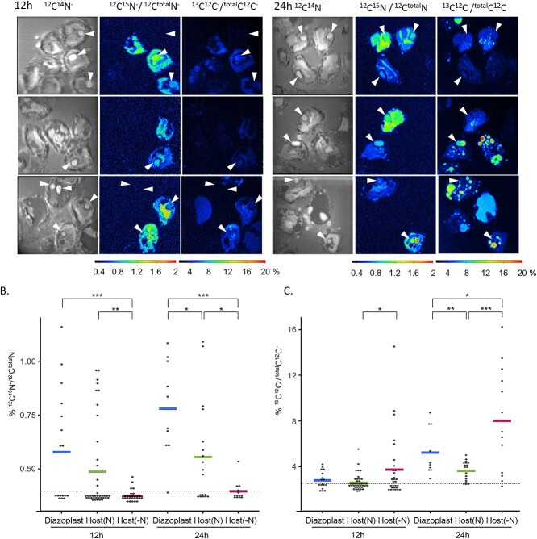

diazoplast
An obligate, membrane-bounded nitrogen-fixing compartment of Epithemia diatoms containing a reduced, nonphotosynthetic cyanobacterial endosymbiont; a metabolically integrated proto-organelle whose genetic integration remains unresolved. [DOI:10.1073/pnas.2507237122]

NCBITaxon:3042617) · Solène L Y Moulin, Sarah Frail, Thomas Braukmann, Jon Doenier, Melissa Steele-Ogus, Jane C Marks, Matthew M Mills, Ellen Yeh; CC BY, via PubMed Central · CC_BY_4_0 · source: PMC PMC11070190.1 f2 · DOI:10.1093/ismeco/ycae055Synonyms: spheroid body
Components
| Component | Type | Part of / acts on | Grounding | Genes | Stoichiometry | Essential | Role |
|---|---|---|---|---|---|---|---|
| membrane | Other | part of | GO:0016020 | UNKNOWN | Boundary and retained internal membranes; no photosynthetic role is asserted.
| ||
| nitrogenase complex | Protein complex | part of | GO:0016610 | nifH, nifD, nifK | UNKNOWN | Nitrogen-fixing enzyme machinery.
| |
| Uptake hydrogenase large subunit | Protein | part of | Reviewed label only (reviewed name; no accession asserted) | hupL | UNKNOWN | Hydrogen-recycling enzyme subunit; functional assignment, not a diazoplast-specific perturbation result.
|
Organism-specific protein examples
Named proteins in which each component's role was established, with the organism the evidence comes from. The component above is the taxon-agnostic family; these are the specific entries behind it.
nitrogenase complex
| Accession | Protein | Gene | Organism | Entry |
|---|---|---|---|---|
UniProtKB:C1DK95 | Nitrogenase iron protein | anfH | Azotobacter vinelandii DJ (NCBITaxon:322710) | UNREVIEWED |
Role and evidence (1 reference)Representative unreviewed (TrEMBL) UniProtKB entry for gene nifH, which UniProt lists under the primary name anfH, in Azotobacter vinelandii DJ. Identifier for the component's declared gene symbol; it is not itself evidence that the protein is part of this structure.
| ||||
UniProtKB:P07328 | Nitrogenase molybdenum-iron protein alpha chain | nifD | Azotobacter vinelandii (NCBITaxon:354) | REVIEWED |
Role and evidence (1 reference)Representative reviewed UniProtKB entry for gene nifD in Azotobacter vinelandii. Identifier for the component's declared gene symbol; it is not itself evidence that the protein is part of this structure.
| ||||
UniProtKB:P07329 | Nitrogenase molybdenum-iron protein beta chain | nifK | Azotobacter vinelandii (NCBITaxon:354) | REVIEWED |
Role and evidence (1 reference)Representative reviewed UniProtKB entry for gene nifK in Azotobacter vinelandii. Identifier for the component's declared gene symbol; it is not itself evidence that the protein is part of this structure.
| ||||
Taxonomic distribution
NCBITaxon:420972Epithemia — COMMON: Reported in all described Epithemia species; physiological uniformity is not implied. [DOI:10.1073/pnas.2507237122]
Canonical examples
NCBITaxon:3042617Epithemia clementina (nom. ined.) — Butano-area isolate studied by isotope imaging, immunoblots and physiological perturbations. Cultures were monoalgal, not axenic. Taxon label verified at ENA/NCBI. [DOI:10.1093/ismeco/ycae055]
Functions
- nitrogen fixation
GO:0009399— Fixes dinitrogen within the host cell.DOI:10.1093/ismeco/ycae055Figures 2-3: isotope incorporation and nitrogenase activity.
- Fixed-nitrogen provision to the host — Transfers fixed nitrogen to the diatom host.
DOI:10.1093/ismeco/ycae055Figure 2: isotope enrichment extends into host compartments; transferred chemical species remain unidentified.
Mechanism graphs
Host carbon supports diazoplast nitrogen fixation (FUNCTION)
| Subject | Predicate | Object | Evidence |
|---|---|---|---|
nitrogenase complex (GO:0016610) | catalyzes | nitrogen fixation (GO:0009399) |
|
diazoplast (cellstructuremech:diazoplast) | performs | nitrogen fixation (GO:0009399) |
|
nitrogen fixation (GO:0009399) | supplies | Fixed nitrogen in host biomass |
|
| Host photosynthesis | produces | Host-fixed carbon |
|
| Host-fixed carbon | is transferred into | diazoplast (cellstructuremech:diazoplast) |
|
| Host photosynthesis | supports | nitrogen fixation (GO:0009399) |
|
| Daytime darkness or DCMU treatment | reduces | nitrogen fixation (GO:0009399) |
|
Discussions
- CURATION_TODO (RESOLVED): Distinguish the diazoplast compartment from nitroplast and a genetically integrated organelle. Dedicated intracellular compartments qualify structurally without assuming demonstrated genetic integration.
- CURATION_TODO (RESOLVED): Do not promote enriched host proteins to confirmed diazoplast constituents. Enrichment can reflect contamination.
- CURATION_TODO (RESOLVED): Keep perturbation, diel and metabolic claims within demonstrated scope. Abstract wording and metabolic models exceed some direct measurements.
- CURATION_TODO (OPEN): Resolve an exact source-neutral uptake-hydrogenase large-subunit family. Broad nickel-hydrogenase families do not isolate the uptake-specific component.
- CURATION_TODO (OPEN): Identify transport substrates, transporters and division machinery directly. Metabolic and cellular integration do not establish molecular mechanisms.
Evidence
DOI:10.1093/ismeco/ycae055Moulin et al. 2024, PMID 38707843/PMC11070190. Final primary Results and Discussion read; Figures 2-4 inspected with PMC metadata MD5 verification.DOI:10.1073/pnas.2507237122Frail et al. 2025, PMID 40794833/PMC12377750. Final primary proteomics and Discussion read, not the differently titled 2024 preprint.GO:0043229Broad structural parent; no genetic-integration criterion.
Curation history
2026-10-03T14:32:11Zcodex · CREATED_RECORD — Scaffolded by scripts/new_record.py2026-10-03T14:33:31Zcodex · EXPANDED_RECORD — Added three constituent classes, verified Epithemia scope/example, nitrogen-fixation exchange graph, explicit proto-organelle/import boundaries, two follow-ups and inspected CC BY 4.0 NanoSIMS figure via the PMC adapter.2026-10-18T05:29:50Zclaude-opus-4-7 · EDIT — added 3 verified UniProtKB protein_example(s).2026-10-21T18:45:05Zcurate-causal-graphs-skill · UPDATED_CAUSAL_GRAPHS — Added source-backed mechanistic descriptions to 7 causal edge(s); Grounded self-referential causal node 'diazoplast' to cellstructuremech:diazoplast.2026-10-23T11:08:00Zclaude-code · ADDRESS_SAVED_REVIEW — Addressed #2404 (Stage 4 finding membrane-organelle-go-subcomplex-causal-node-types): retyped GO-grounded PROTEIN_COMPLEX causal-graph node nitrogenase (GO:0016610) from GENE_OR_PROTEIN to STRUCTURE.